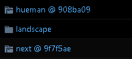

hexo主目录结构
1 | |-- _config.yml |
- _config.yml，全局配置文件。，网站的很多信息都在这里配置，诸如网站名称，副标题，描述，作者，语言，主题，部署等等参数。
- package.json，框架的参数和依赖插件
- scaffolds，是“脚手架、骨架”的意思，当你新建一篇文章（hexo new ‘title’）的时候，hexo是根据这个目录下的文件进行构建的。
- source目录，博客文件存储的目录。其中，
_posts是发布出来的博客的目录，_drafts是草稿存储的目录。 - themes，存储主题的目录。
安装其他插件之后，会有其他的目录或文件：1
|-- .deploy_git
- .deploy_git，hexo-deploy-git插件自动生成的目录
- db.json，NexT主题生成的文件
需要同步的文件和目录
需要同步的文件和目录包括：
- _config_yml
- package.json
- source
- themes
- scaffolds
剩下不需要同步的文件，添加到.gitignore文件中：1
2
3
4
5
6
7.DS_Store
Thumbs.db
db.json
*.log
node_modules/
public/
.deploy*/
使用github进行异地同步
本机上传源码
我们在xxx.github.io这个repo下建一个source分支，来保存博客源码。
新建source分支
1
git checkout -b source
上传博客文件
1
2
3git add --all
git commit -m "init blog data"
git push origin source上传第三方主题文件
因为第三方主题文件是从github上clone下来的一个完整的repo，那么在MyBlog目录下是无法直接将主题文件上传到自建的reop上的。
如果执行git add ./themes/next/*会报fatal: Pathspec ‘themes/next/_config.yml’ is in submodule的错误。
如果以后不想更新主题，最简单的方式是先清空next主题目录下的.git文件夹，然后清空缓存，最后提交主题文件。1
2
3
4
5$ rm -rf ./themes/next/.git
$ git rm -rf --cached ./themes/next/
$ git commit -m "add theme NexT"
$ git push origin master
如果想以后更新主题，那么在添加主题的时候，不能直接git clone第三方主题。
Fork该第三方主题仓库，这样就会在自己账号下生成一个同名的仓库，并对应一个url，我们应该git clone自己账号下的url。
这样做的原因是：我们很有可能在原来主题基础上做一些自定义的小改动，为了保持多终端的同步，我们需要将这些改动提交到远程仓库。而第三方仓库我们是无法直接push的。
这样就会出现git仓库的嵌套问题，我们通过git submodule来解决这个问题.
下面这条命令会在themes/next目录下clone自己账号下的hexo-theme-next1
git submodule add git@github.com:xxx/hexo-theme-next.git themes/next
查看submodule列表：
git submodule
补充一个删除submodule的方法：git submodule deinit themes/next
将第三方主题提交到source分支：1
2
3 git add ./themes/*
git commit -m 'add theme next and hueman'
git push origin source
远程repo的source分支中并不会添加第三方主题的源码，而是类似指针一样，在themes目录下多两个（添加了2个第三方主题）链接到其他repo的文件夹：

修改了第三方主题文件之后，需要切换到第三方主题的目录下提交。1
2
3
4 cd ./themes/next
git add _config.yml
git commit -m 'config theme next'
git push origin master
另一台机器下载
安装nodejs和git环境
从source分支clone博客源码
无法clone第三方主题文件。1
$ git clone -b source https://github.com/xxx/MyBlogData.git MyBlog
安装hexo相关插件
1
2$ npm install
# 安装package.json文件中配置的依赖包clone第三方主题
第三方主题在submodule里，需要执行下面语句将第三方主题文件clone下来。1
2
3
4
5git submodule init
Submodule 'themes/hueman' (git@github.com:xxx/hexo-theme-hueman.git) registered for path 'themes/hueman'
Submodule 'themes/next' (git@github.com:xxx/hexo-theme-next.git) registered for path 'themes/next'
git submodule update
我们修改的第三方主题文件提交到master分支了，需要切换到master分支将最新的代码pull下来。1
2
3
4
5
6
7
8
9
10 cd ./themes/next
git branch
* (HEAD detached at 9f7f5ae)
master
git checkout master
git branch
* master
git pull
总结
- 将源码push在source分支
- 使用submodule解决第三方主题的问题
- 修改第三方主题文件的时候，需要切换到第三方主题的目录
参考：
关于博客同步的解决办法: https://devtian.me/2015/03/17/blog-sync-solution/